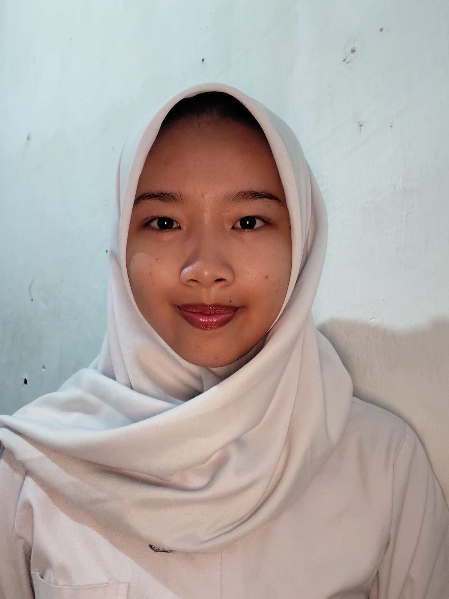

Undergraduate student in Artificial Intelligence Engineering with strong interest in technology, data modeling, data processing, and algorithm-based problem solving. Familiar with Python, basic data processing, and algorithmic thinking. Also experienced in basic electronics, including hardware maintenance and component assembly, enabling understanding of systems from both software and hardware perspectives. Adaptable team player with good communication skills and experience working in collaborative environments.
Institut Teknologi Sepuluh Nopember – Surabaya, Jawa Timur
Bachelor of Artificial Intelligence Engineering – 2024
GPA: 2.8
SMK Negeri 3 – Surabaya, Jawa Timur
Vocational High School, Audio Video Engineering
Graduated: 2024
Student Attendance Information System (Laravel)
AI-based Smart Monitoring Web Application (Planned Final Project)
Aspiring Cyber Security Engineer
Motivated to build expertise in system security, network protection, and intelligent monitoring systems to contribute in the field of cyber defense and secure infrastructure development.
Intern – Signaling & Electrical Systems (SINTELIS Division)
PT Kereta Api Indonesia (Persero) – Surabaya | Sep 2023 – Feb 2024